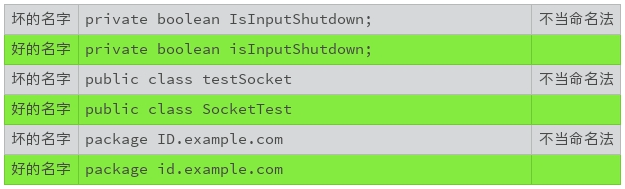

- 00 开篇词 你写的每一行代码，都是你的名片.md.html
- 01 从条件运算符说起，反思什么是好代码.md.html
- 02 把错误关在笼子里的五道关卡.md.html
- 03 优秀程序员的六个关键特质.md.html
- 04 代码规范的价值：复盘苹果公司的GoToFail漏洞.md.html
- 05 经验总结：如何给你的代码起好名字？.md.html
- 06 代码整理的关键逻辑和最佳案例.md.html
- 07 写好注释，真的是小菜一碟吗？.md.html
- 08 写好声明的“八项纪律”.md.html
- 09 怎么用好Java注解？.md.html
- 10 异常处理都有哪些陷阱？.md.html
- 11 组织好代码段，让人对它“一见钟情”.md.html
- 12丨组织好代码文件，要有“用户思维”.md.html
- 13 接口规范，是协作的合约.md.html
- 14 怎么写好用户指南？.md.html
- 15 编写规范代码的检查清单.md.html
- 16丨代码“规范”篇用户答疑.md.html
- 17 为什么需要经济的代码？.md.html
- 18丨思考框架：什么样的代码才是高效的代码？.md.html
- 19 怎么避免过度设计？.md.html
- 20 简单和直观，是永恒的解决方案.md.html
- 21 怎么设计一个简单又直观的接口？.md.html
- 22丨高效率，从超越线程同步开始！.md.html
- 23 怎么减少内存使用，减轻内存管理负担？.md.html
- 24 黑白灰，理解延迟分配的两面性.md.html
- 25 使用有序的代码，调动异步的事件.md.html
- 26 有哪些招惹麻烦的性能陷阱？.md.html
- 27 怎么编写可持续发展的代码？.md.html
- 28 怎么尽量“不写”代码？.md.html
- 29 编写经济代码的检查清单.md.html
- 30丨“代码经济篇”答疑汇总.md.html
- 31 为什么安全的代码这么重要？.md.html
- 32 如何评估代码的安全缺陷？.md.html
- 33 整数的运算有哪些安全威胁？.md.html
- 34 数组和集合，可变量的安全陷阱.md.html
- 35 怎么处理敏感信息？.md.html
- 36 继承有什么安全缺陷？.md.html
- 37 边界，信任的分水岭.md.html
- 38 对象序列化的危害有多大？.md.html
- 39 怎么控制好代码的权力？.md.html
- 40 规范，代码长治久安的基础.md.html
- 41 预案，代码的主动风险管理.md.html
- 42 纵深，代码安全的深度防御.md.html
- 43 编写安全代码的最佳实践清单.md.html
- 44 “代码安全篇”答疑汇总.md.html
- Q&A加餐丨关于代码质量，你关心的那些事儿.md.html
- 结束语 如何成为一个编程好手？.md.html
- 捐赠
05 经验总结：如何给你的代码起好名字？
上一节我们讲了编码规范的重要性，而编码规范，从起一个好名字开始。但起名字，也没有我们想得那么简单。有个流传很广的戏言：“计算机科学只有两件难事，废弃缓存和取名字。”
之所以说是戏言，因为取名字这件事无论如何都不算是高深的学问；之所以广泛流传，因为取名字真的就是一件很难的事情，而且起名字是关乎代码质量的大事。
给小孩取过名字的人都知道，取个好名字有多难，又要合八字，又要算五行，还要避尊者讳。 写程序给代码取名字更难，每天都要想很多名字。给孩子取名字，父母喜欢就行，给代码取名字，还要别人也喜欢。
为什么需要一个好名字？
名字要准确地代表它背后的东西，并且还能让代码干净漂亮。不然，我们的思路就会受到干扰，影响我们的思考和心情。
比如说，对于答案只有是与非两个选择的时候，我们通常使用布尔类型（boolean）。所以，取名字的时候，我们通常需要一个表达疑问的前缀，比如是不是“is”。
public boolean isEmpty(); // String.isEmpty()
但如果我们把这样的疑问前缀，使用到一个非布尔类型上，会有什么效果？
public byte[] isEmpty();
你是不是觉得如鲠在喉，对于代码要干什么百思不得其解？ 反正，我写这个例子的时候，感觉像是吃了五百只苍蝇！
名字就是沟通的方式，错误的命名很难让我们清楚地理解代码真实的意图。所以，混淆的命名很难让我们阅读和理解代码。
虽然编译器不关心命名的好坏，但是我们却可以从一个好名字中获得巨大的好处。
为什么需要命名规范？
虽然起一个好名字的重要性不言而喻，但命名规范的选择，以及执行程度，却是一个有争议的话题。有人喜欢这种规范，有人喜欢那种规范，有人干脆认为规范都太教条，真是众口难调。此外，即使已知且明确定义了命名规范，某些组织也无法始终如一地遵守它们，从而导致不一致和混淆。如果命名规范内部不一致，任意且难以记忆，这些挑战还会加剧。
所以使用一个好的命名规范是非常重要的，我们都能获得哪些好处呢？
为标识符提供附加的信息，赋予标识符现实意义。帮助我们理顺编码的逻辑，减少阅读和理解代码的工作量；
使代码审核变得更有效率，专注于更重要的问题，而不是争论语法和命名规范这类小细节，提高开发效率；
提高代码的清晰度、可读性以及美观程度；
避免不同产品之间的命名冲突。
有哪些常见的命名方法？
尽管不同的编程环境、不同编程语言也需要沟通，但遗憾的是，到目前为止，还没有一种通用的命名方法。 在不同的场景下，程序员们有着不同的偏好。我们需要阅读很多代码，多了解一些命名方法，这样我们才能更好地理解不同风格的代码。
我来一一介绍下几种常见的命名方法。
1.驼峰命名法（CamelCase）
驼峰命名法指的是使用大小写混合的格式，单词之间不使用空格隔开或者连接字符连接的命名方式。它有两种格式：大驼峰命名法（UpperCamelCase）和小驼峰命名法（lowerCamelCase）。
大驼峰命名法的第一个单词以大写字母开始，其余的和小驼峰命名法相同。 比如：LastName, InputStream。
小驼峰命名法的第一个单词以小写字母开始，其他单词以大写字母开始，其余字母使用小写字母。 比如：firstName, toString。
有时候，一个名字可能有不只一种合理形式，比如缩略语（IPv6）或者异常的结构（iOS)。 为了减少这种不确定性，Google定义了以下的转换规则：
从正常的表达形式开始，把短语转换成ASCII码，并且移除单引号。 例如，“Müller’s algorithm”转换为“Muellers algorithm”；
如果上述结果含有其他标点符号，比如连字符，在该符号处，把这个结果切分成单词形式。 如果某个单词已经是驼峰形式，也相应地切分开来。 例如，“AdWords”切分成“ad words”，“non-current assets”切分成“non current assets”；
将所有字母转换为小写字母，然后将每个单词的首字母大写，这样就得到了大驼峰式命名的形式； 如果第一个单词的首字母小写，就得到了小驼峰式命名的形式；
将所有的单词连在一起，就是最后的标识符命名。
下面的表格列出了不同例子的正确转换形式，和容易出错的转换形式 （出自“Google Java Style Guide”）。
- 2.蛇形命名法（snake_case）
在蛇形命名法中，单词之间通过下划线“_”连接，比如“out_of_range”。
3.串式命名法（kebab-case）
在蛇形命名法中，单词之间通过连字符“-”连接，比如“background-color”。
4.匈牙利命名法
在匈牙利命名法中，标识符由一个或者多个小写字母开始，这些字母用来标识标识符的类型或者用途。标识符的剩余部分，可以采取其他形式的命名法，比如大驼峰命名法。
如果起始的小字母用来表示标识符的数据类型，这种命名法也被称为系统匈牙利命名法。 比如：
lAccountNum标识一个_长整数_（首字母“l”，long）。
szName标识一个_零字符结束的字符串_（首字母“sz”，zero-terminated string）。
如果起始的小字母用来表示标识符的实际用途，这种命名法也被称为应用匈牙利命名法。 比如：
rwPosition标识一个_行_（首字母“rw”，row）。
usName标识一个_非安全字符串_（首字母“us”, unsafe string）。
由于在微软产品中的广泛使用，匈牙利命名法曾经是一种流行的命名形式。然而，由于这种命名会带来不必要的记忆负担和阅读障碍，导致命名规则的执行和名称的维护都很困难，微软已经抛弃了这种命名形式。
由于历史的原因，还有很多代码使用这种命名形式。阅读这些代码时，你可以选择性地忽略这些表示类型或者用途的字母前缀。
Java命名规范
一段代码，是不是只能使用一种命名方法？ 一般来说，一个编码规范会组合使用这些命名方法，每一种命名方法都被规定了适用的范围。 这样就形成了命名规范。
比如，Java的命名规范可以使用下表来表示。
需要注意的是，常量必须是真的不能改变的量，不打算改变或者能够改变的量都不能算作常量。
比如，下面的例子声明的是常量：
static final short MAX_VALUE = 32767;
static final Set<String> EMPTY_NAMES =
Collections.unmodifiableSet(Collections.emptySet());
下面的例子声明的就不是常量，它们的值都可以改变：
static short nonFinalShort = 32767;
static final Set<String> mutableNames = Collections.emptySet();
static final String[] names = { "Alice", "Bob", "Tom" };
需要注意的是，方法标识符使用动词或者动词短语，这是传统的方法命名。如果能够分隔开配置（set）和使用（get），使用名词的方法标识符。比如Builder模式的接口设计。这个接口设计和命名惯例，我们以后再讨论。
怎么取好名字？
了解了命名方法后，你是不是想知道怎么取好名字呢？一般来说，给代码取名字，需要遵守如下三条原则。
1.要有准确的意义
名字要能够准确、完整地表达出它代表的意义，可以见字知意，名副其实。
比如，表达式“a = b - c”的语法是没有什么问题，可是该表达式代表的实际含义并不清楚。相比而言，“grossIncome = grossRevene - costOfGoodsSold”就有很准确、清晰的现实意义。这样的命名更容易阅读和理解。
2.严格遵守命名规范
不同的编程环境，偏爱不同的命名规范，比如Java倾向于使用驼峰命名法，C语言倾向于使用蛇形命名法，CSS使用串式命名法。 尽管如此，如果定义了个性化的命名规范，请严格遵守自定义的命名规范，如果没有定义个性化的命名规范，我们就需要严格遵守业界普遍公认的命名规范。
- 3.可读性优先
名字的可读性一定要优先考虑，一般需要注意以下几点。
可读性强的名字优先于简短的名字，尽量使用完整的词汇。
不要使用缩写、简写、缩略词，除非这些词语被广泛使用。
不要使用太短的名字，比如一个字母，除非是广泛接受的特例（i/j/k/m/n表示临时使用的整数，c/d/e表示临时使用的字符）。
避免含糊、混淆或者误导。
另外，不要混合使用英文和汉语拼音。由于很多类库使用的是英文，如果使用汉语拼音命名，会造成事实上的拼音名字与英文名字的混用，所以也要尽量避免使用拼音命名。
小结
简言之，取名字要做到“信、达、雅”（准确、直观、优美）。“信”和“达”是基本要求，有才气的你可以有“雅”的追求。
取好名字是编写优秀代码最基础也是最重要的一项修炼。 你不妨试试上述的原则和规范，将它们用于新代码，或者整理老代码。 仅仅因为名字的优化，你就会立刻感受到代码质量的大幅度提升！
一起来动手
所以为了让你更好地实践，我找了一段Java代码。你来试试，这段代码中有哪些名字可以优化？ 欢迎你把优化的代码发在评论里，我们亲自感受下如何优化代码名字。
import java.util.HashMap;
import java.util.Map;
class Solution {
/**
* Given an array of integers, return indices of the two numbers
* such that they add up to a specific target.
*/
public int[] twoSum(int[] nums, int target) {
Map<Integer, Integer> map = new HashMap<>();
for (int i = 0; i < nums.length; i++) {
int complement = target - nums[i];
if (map.containsKey(complement)) {
return new int[] { map.get(complement), i };
}
map.put(nums[i], i);
}
throw new IllegalArgumentException("No two sum solution");
}
}
备注：代码选自https://leetcode.com/problems/two-sum/
你也可以把这篇文章分享给你的朋友或者同事，一起来讨论一下这道小小的练习题。
© 2019 - 2023 Liangliang Lee. Powered by gin and hexo-theme-book.